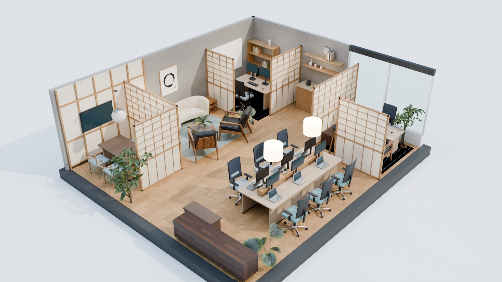
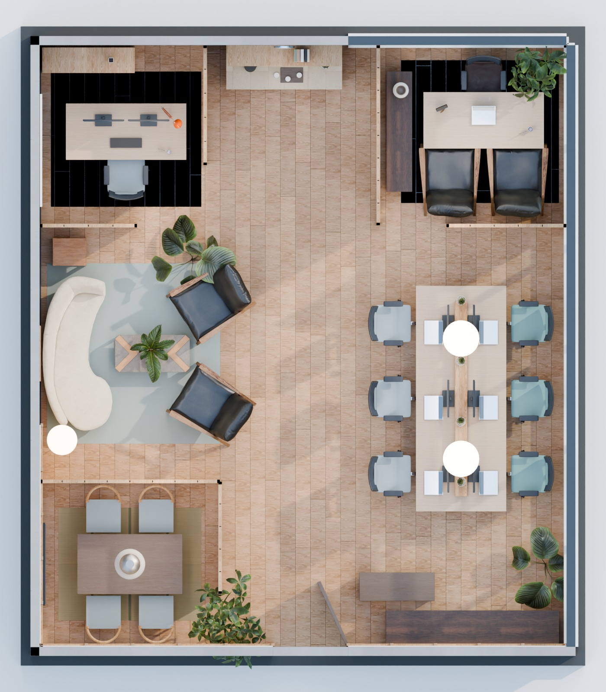
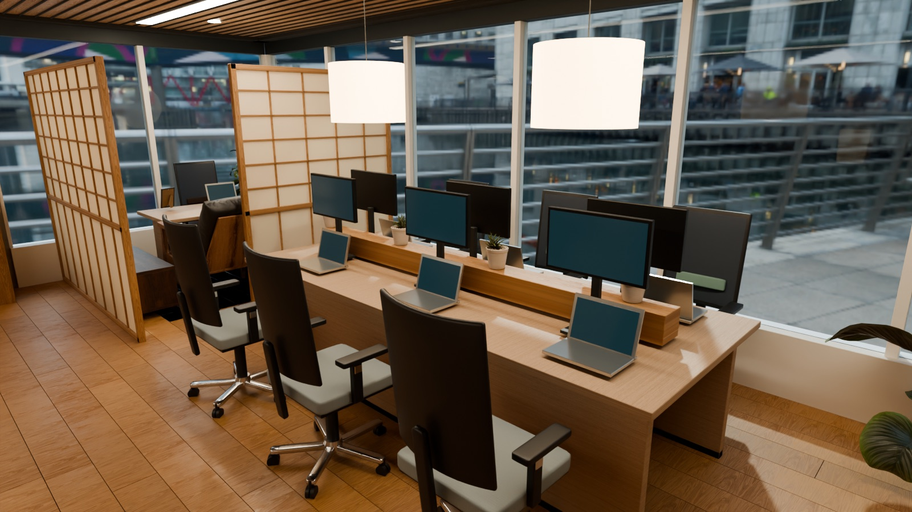
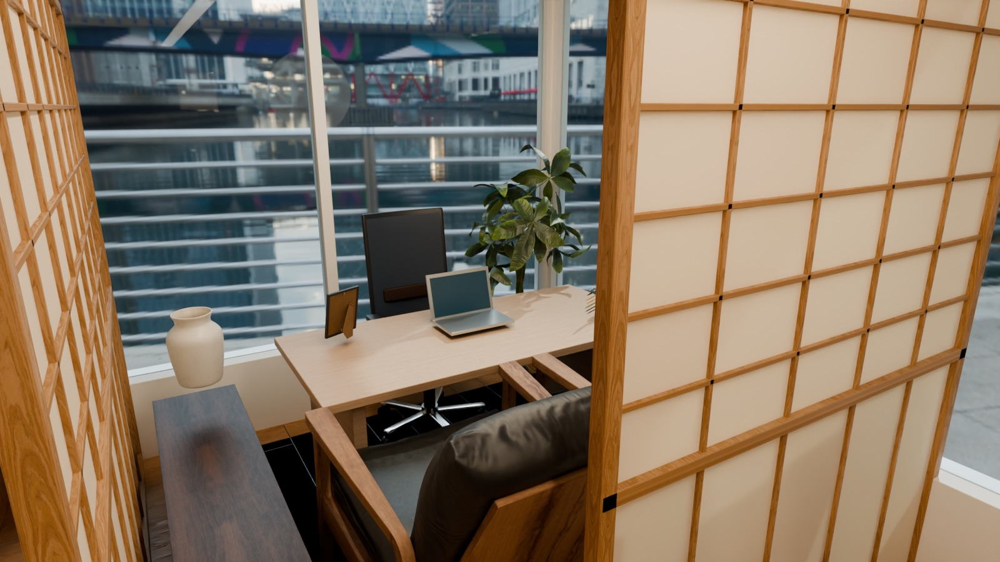
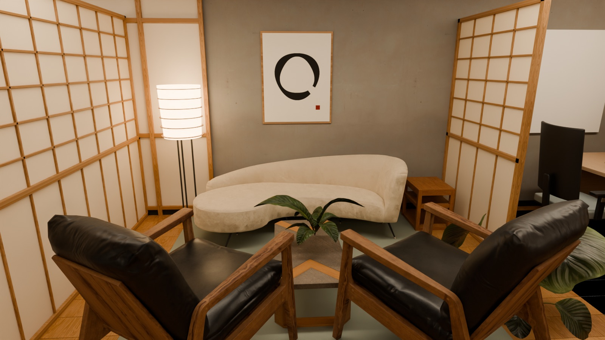
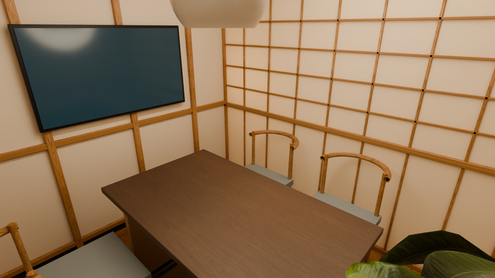
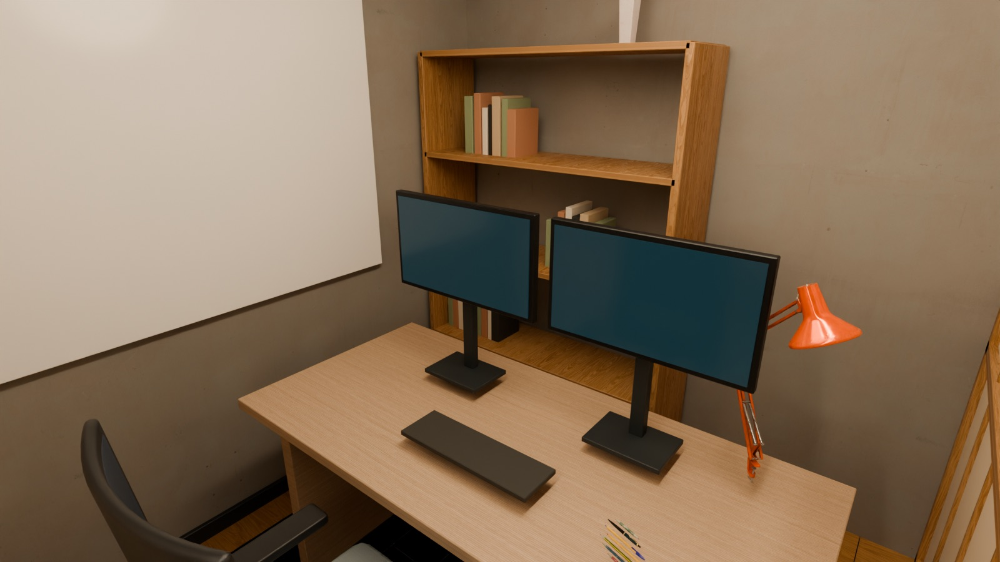
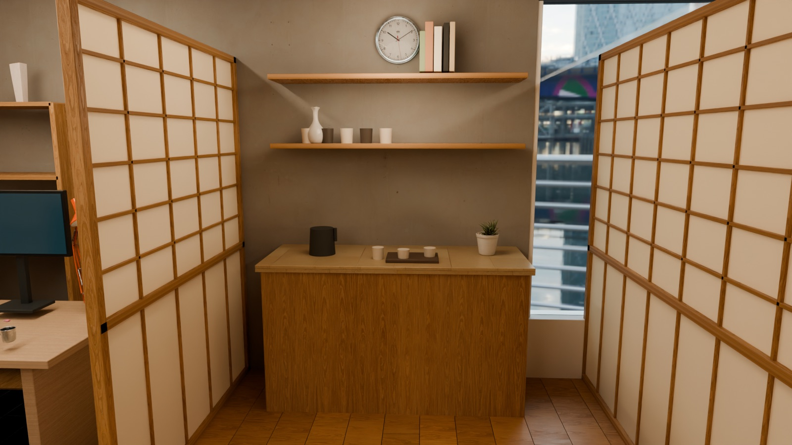
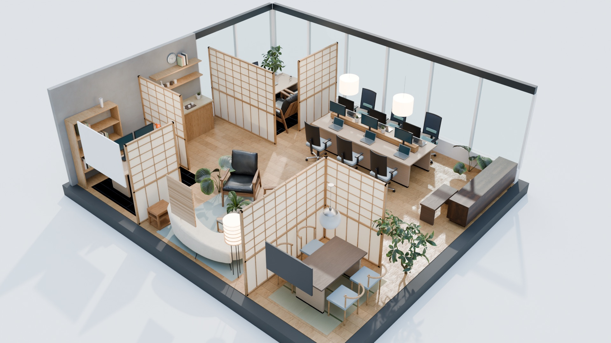

Every measurement from the Japandi layout: room shell, openings, zones, furniture, heights and clearances. Positions are measured to each item's centre, from the left wall and from the back (window) wall, in metres.


| Zone | Size, m | Area | Enclosure |
|---|---|---|---|
| CEO study | 2.50 × 2.40 | 6.0 m² | Shoji 2.40 (west) + 1.60 (south); 0.90 opening |
| CTO lab | 2.20 × 2.40 | 5.3 m² | Shoji 1.60 (east) + 1.30 (south); 0.80 and 0.90 openings |
| Meeting room | 2.40 × 2.20 | 5.3 m² | Shoji 2.40 (north) + 1.50 (east); 0.70 entry |
| Lounge | 2.50 × 2.80 | 7.0 m² | Open, on a 2.30 × 2.40 rug |
| Team table | 2.55 × 3.70 | 9.4 m² | Open, along the right-hand glazing |
| Tea bar | 1.50 × 0.55 | 0.8 m² | Back wall, 2.50–4.00 from left |
| Entry storage | 2.40 × 0.42 | 1.0 m² | Front wall, 4.55–6.95 from left |
| Circulation | — | ≈ 21 m² | Walkway, door swing and access space |
Zone areas add up to about 35 m² of the 56 m² floor; the rest is circulation. The team table sits 0.80 m off the glass, enough for a chair to slide out.
| Element | Dimensions, m | Position and notes |
|---|---|---|
| Internal floor | 7.00 × 8.00 | 56.0 m². Pale oak boards 0.20 m wide, 1.20–2.40 m long, running front to back |
| Floor to ceiling | 2.60 | Oak slat ceiling, grooves at 0.12 m centres, 0.16 m shadow gap round the edge |
| Wall thickness | 0.12 | Limewash plaster finish |
| Entrance door | 1.00 × 2.20 | Front wall, 3.10 m from the left wall and 2.90 m from the right. Walnut leaf 0.95 × 2.18, opens inward |
| Right-hand glazing | 8.00 × 2.00 | Full length, 6 bays × 1.33 m. Sill 0.42 m, head 2.42 m, mullions 0.06 m |
| Back glazing | 2.90 × 2.00 | From 4.10 m to 7.00 m from the left wall, 2 bays × 1.45 m. Same sill and head |
| Back solid wall | 4.10 × 2.60 | Left corner to the glazing. Tea bar and CTO bookcase sit here |
| Oak batten panelling | h 2.58 | Front wall 3.10 + 2.90 m either side of the door; left wall 2.95 m (5.05–8.00 m from the back). Battens 0.045 × 0.035 at about 0.62 m centres; rails at 0.10, 0.92 and 2.06 m |
| Skirting | 0.08 | Charcoal, left wall |
| Linear light slots | 0.14 × 7.00 | Two, recessed in the ceiling, 1.60 m and 5.45 m from the left wall |
| Downlights | Ø 0.12 | Four: CEO desk, tea bar, CTO desk, meeting table |
Size is width × depth × height. Position is the item's centre, measured from the left wall, then from the back (window) wall.
| Item | W × D × H, m | From left, back | Material |
|---|---|---|---|
| CEO study | |||
| Desk, trestle | 1.60 × 0.75 × 0.74 | 5.90, 1.00 | Ash |
| Desk chair, ergonomic | 0.66 × 0.62 × 1.12 | 5.90, 0.45 | Dark leather seat, mesh back, aluminium base |
| Guest armchairs (2) | 0.82 × 0.99 × 1.02 | 5.45 / 6.35, 1.80 | Oak frame, black leather cushions (Poly Haven) |
| Credenza | 1.60 × 0.34 × 0.45 | 4.78, 1.15 | Walnut body, fluted oak sliding doors (Poly Haven) |
| Rug | 2.10 × 1.90 | 5.85, 1.15 | Wool, oatmeal |
| Money tree | h 1.50 | 6.65, 0.38 | Pachira, window corner |
| CTO lab | |||
| Desk, trestle | 1.60 × 0.75 × 0.74 | 1.15, 1.15 | Ash |
| Monitors (2) | 0.55 × 0.32 | 0.85 / 1.45, 1.00 | On desk, screen centre 1.20 h |
| Task chair, ergonomic | 0.66 × 0.62 × 1.12 | 1.15, 1.75 | Linen seat, mesh back, lumbar pad, aluminium base |
| Bookcase | 1.20 × 0.34 × 1.80 | 0.65, 0.20 | Oak, 4 shelves at 0.45 m |
| Writable wall | 1.50 × 1.10 | 0.00, 1.40 | On left wall, 0.90–2.00 m high |
| Rug | 2.00 × 1.80 | 1.15, 1.25 | Wool, stone grey |
| Tea bar | |||
| Counter | 1.50 × 0.55 × 0.86 | 3.25, 0.28 | Fluted oak |
| Counter top | 1.54 × 0.60 × 0.04 | 3.25, 0.29 | Marble, top at 0.90 m |
| Open shelves (2) | 1.50 × 0.28 | 3.25, 0.14 | Oak, at 1.55 and 1.95 m |
| Wall clock | Ø 0.28 | 3.25, 0.03 | Centre 2.05 m high |
| Lounge | |||
| Sofa, curved | 2.05 × 0.95 × 0.74 | 0.50, 4.10 | Oatmeal velvet, brass legs (Wayfair Frankie model) |
| Lounge armchairs (2) | 0.82 × 0.99 × 1.02 | 2.30, 3.40 / 4.80 | Oak frame, black leather cushions (Poly Haven) |
| Coffee table | 1.00 × 0.50 × 0.33 | 1.50, 4.10 | Oak frame, stone top (Poly Haven) |
| Side table | 0.45 × 0.37 × 0.45 | 0.40, 2.75 | Oak, two shelves (Poly Haven) |
| Paper floor lamp | Ø 0.40 × 1.40 | 0.30, 5.25 | Washi shade, charcoal legs |
| Ink artwork | 0.70 × 0.90 | 0.00, 4.10 | On left wall, centre 1.50 m |
| Rug | 2.30 × 2.40 | 1.25, 4.10 | Jute-linen |
| Calathea | h 0.80 | 2.05, 2.75 | In pot |
| Team table | |||
| Work table | 3.00 × 1.20 × 0.74 | 5.60, 4.70 | Ash, runs front to back |
| Work positions (6) | 1.00 × 0.60 | 3 per side | At 3.70, 4.70, 5.70 m from the back |
| Planted spine | 0.16 × 2.60 × 0.14 | 5.60, 4.70 | Oak trough with succulents, top 0.90 m |
| Monitors (6) | 0.50 × 0.29 | on table | One per position |
| Task chairs, ergonomic (6) | 0.66 × 0.62 × 1.12 | 4.68 / 6.52 | Mesh back, lumbar pad, adjustable arms; linen (aisle) and sage (window) seats |
| Washi pendants (2) | Ø 0.48 × 0.36 | 5.60, 3.90 / 5.50 | Bottom at 1.67 m |
| Meeting room | |||
| Table | 1.40 × 0.80 × 0.74 | 1.20, 6.90 | Walnut top, ash legs |
| Chairs (4) | 0.46 × 0.44 × 0.80 | 0.85 / 1.55, 6.25 / 7.55 | Oak frame, linen seat |
| Tatami mat | 1.90 × 1.50 | 1.20, 6.90 | Rush, black border |
| Wall screen | 1.10 × 0.64 | 0.00, 6.90 | On left wall, centre 1.35 m |
| Pendant | h 0.90 drop | 1.20, 6.90 | White globe |
| Entry | |||
| Storage sideboard | 2.30 × 0.49 × 0.64 | 5.75, 7.76 | Walnut body, fluted oak sliding doors (Poly Haven) |
| Bench | 1.00 × 0.38 × 0.45 | 4.75, 7.20 | Walnut |
| Money tree | h 1.45 | 2.55, 7.60 | Pachira, beside the door |
| Shoji screens (all) | |||
| Screen height | 2.10 | — | Oak posts 0.045 × 0.05; rails at 0.03, 0.90, 2.08 m |
| Lattice | ≈ 0.32 grid | — | Translucent paper; 6 rows above 0.90 m |
| Total length | 11.80 | — | CEO 4.00, CTO 2.90, meeting 3.90 |
| Height above floor | m |
|---|---|
| Coffee table | 0.33 |
| CEO credenza | 0.45 |
| Window sill | 0.42 |
| Chair seats | 0.44–0.48 |
| Desk and table tops | 0.74 |
| Tea counter top | 0.90 |
| Entry sideboard top | 0.64 |
| Sofa back | 0.74 |
| Team pendants, underside | 1.67 |
| CTO bookcase | 1.80 |
| Shoji screens | 2.10 |
| Door head | 2.20 |
| Window head | 2.42 |
| Ceiling | 2.60 |
| Clearance | m |
|---|---|
| Central walkway, door to tea bar (length) | 7.45 |
| Central walkway, narrowest width | ≈ 1.65 |
| Team table edge to glazing | 0.80 |
| Team table edge to walkway (chair zone) | ≈ 0.60 |
| CEO desk to back glazing (chair zone) | 0.63 |
| CTO desk to south shoji (chair zone) | 0.88 |
| Meeting table to shoji (each long side) | 0.70 |
| CEO study opening | 0.90 |
| CTO lab openings | 0.80 / 0.90 |
| Meeting room entry | 0.70 |
| Door swing radius | 0.95 |
Two places are tight and worth checking on site: the 0.63 m behind the CEO desk (0.75 m is more comfortable) and the 0.70 m meeting-room entry (0.80 m suits most wheelchairs and deliveries).






